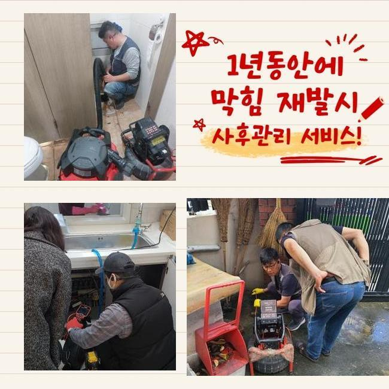
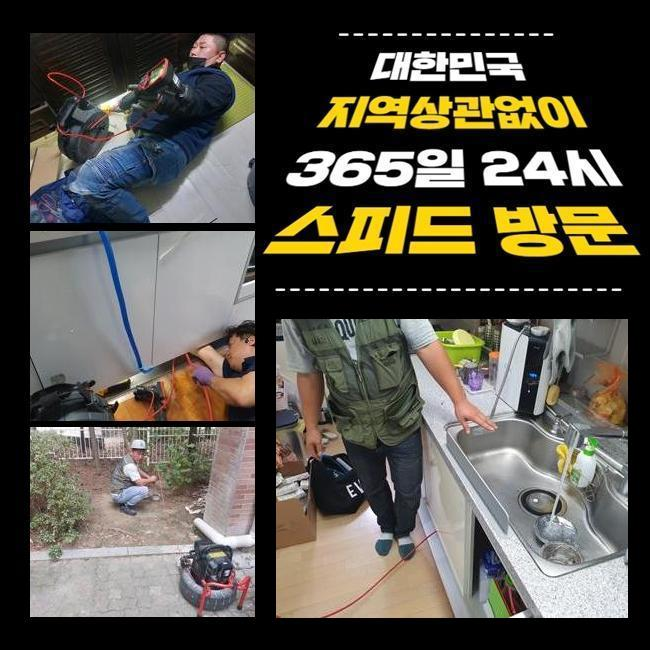
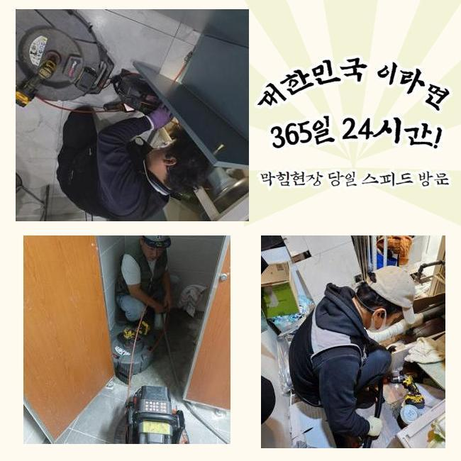
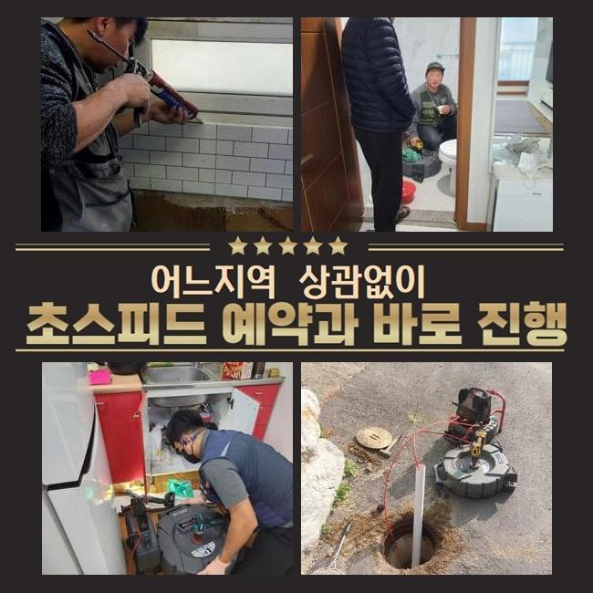

🏠 인천중구 욕실배수구막힘 인천동구 식당하수구막힘
인천 하수구막힘 전문 시공 후기

📋 작업 개요
- 위치: 인천
- 서비스 유형: 하수구막힘, 배관막힘, 누수수리, 역류해결, 배관청소
- 작업 일시: 2024. 12. 24. 23:03
- 업체명: 하수구수사대 (010-5615-2118)
🔍 문제 상황
인천중구 욕실배수구막힘 인천동구 식당하수구막힘
오전에 고객님께 긴급요청을 전달받고 요청하신 곳으로 출발하였습니다
고객분께서 급하게 도움을 요청하셨고 저희 전문가는 빠르게 장비들을 싣고 주소지로 출발했어요
배수관이 막혀버리면 실생황에 큰 어려움이 일어나므로 이런 문제들을 가능한 신속하게 처리하는게 가장 우선시됩니다
현장으로 출동하여 우선 막힌부위를 살펴보았습니다
배수관 막힘사고는 세탁실 안쪽에서 발견됐는데 탈수를 하면 잘 내려가지 못하고 역류하고있는 상황이였어요
고객께서는 배수구 막힘문제를 해결하기 위해 인터넷을 보고 몇 번 따라해봤으나 전혀 도움이 되질 못했고 결국엔 세탁기기를 이용할 수 없게 되어버린 지경까지 와버렸다고 말씀하셨어요
일반적으로 가정집에서 배수구가 막힌 것을 직접 수리 해보겠다고 시중에 나와있는 많은 약품등을 이용해보지만 근본이 되는 정확한 이유를 찾아서 처리하실 수는 없으시겠죠

🔎 원인 분석
💡 전문가 진단: 정밀 진단 장비를 사용하여 슬러지의 고착 여부를 판명하고 타격/세척 작업을 실시했습니다.
하수설비는 사용이 많아질수록 침전물이 쌓이면서 역류 상황등이 생기기때문에 이상이 생긴 부위를 확인하고 그에 맞는 작업방식을 적용해야 합니다
우선 배수구 안쪽과 건물 외부쪽 배수관 확인을 해봤습니다
배수구가 막힌 이유를 정확하게 판단하려면 내부상황은 물론 외부로 나있는 배수관도 살펴보아야해요
배수구는 집에서 사용한 물들을 밖으로 내려보내는 형태라서 막힘문제의 원인들이 안쪽의 배수관에 있는 것인지 외부의 하수관에 생긴건지 파악해야해요
전반적으로 검사를 해보니 외부 하수라인에 이물질들이 가득 쌓여 하수가 원활하게 배출되지 못했던 것이였어요
이와같은 배수구 막힘문제를 해결하려면 안과 밖의 배수라인을 한번에 시공합니다
일단 내시경장비를 이용해 배수관 안쪽 상황을 세밀하게 관찰합니다
내시경기기로 배수관 안에 가득한 슬러지가 하수관을 꽉 막고있는 것을 확인했어요

🔧 작업 과정
샤프트기계를 이용해서 배수관에 가득쌓인 불순물을 해결하는 작업에 들어갔습니다
샤프트기는 회전하는 힘을 이용해서 이물질들을 빠르게 처리해내는 장치로서 배수관에 붙은 딱딱하게 변형된 오염물질을 파쇄하여 배출시키는데 도움이 됩니다
샤프트기기는 배수라인 안쪽의 슬러지를 파쇄하여 배수관을 깨끗하게 만들어줘요
배수관의 문제정도가 심각해서 전문진이 장시간 반복하여 배수라인 안쪽으로 단단하게 붙어있는 노폐물을 완전히 제거했어요
소량의 찌꺼기등은 시간이 지날수록 하수라인에 쌓이게 되면서 물이 빠져나가는 것을 지연시키므로 이렇게 불순물이 배관 속에 적재되지 않도록 예방해야합니다
내부쪽 배수구에서 빼낸 슬러지가 다시 하수관으로 내려가지 않도록 걸러서 폐기하는 과정까지 완료한 후에 하수라인을 최종적으로 점검합니다
이번엔 단단하게 굳어버린 오염물질이 배수관을 막아버린 상황이였는데 작업과정을 끝내고 난 후에 내시경기를 활용해서 배수관 안쪽이 깔끔하게 청소된걸 확인했습니다
마지막 마무리까지 다하고 물을 틀어 계속적으로 내려보내며 물이 잘 안내려가는 등의 문제들이 또 없는건지 통수 확인을 하였습니다
배수관에서 오수가 잘 내려가는 모습을 확인한 후에 작업을 정리했습니다
고객께서는 원인뿐만 아니라 오류가 해결되어가는 과정까지 시공에 들어가면서부터 저희들과 같이 모든 과정으로 지켜보셨어요
저희 전문진은 하수설비의 이상을 가장 빠르게 해결 해드려요
하수설비에 이상이 발생하면 실생황에 큰 어려움이 일어날 수도 있기때문에 저희 업체는 신속정확하게 처리 해드리고자 항상 긴급출동하고 있습니다
오늘과 같은 하수관 막힘문제는 불편감만 주는게 아니라 위생같은 관념에도 영향을 끼치므로 신속하게 처리하시는게 좋습니다


✅ 작업 완료
만약에라도 누수가 밑에집으로 번져 피해를 주게 되었다면 윗집에서 영향을 준 누수가 맞는지 파악해야하며 전문진에게 점검을 의뢰하여 정확하게 상황을 판단하시길 바랍니다
저희 전문진은 불필요한 작업없이 빠른 출동으로 고객분께서 안심하시도록 작업을 진행하겠습니다
하수관 문제로 전문가의 도움이 필요하다 싶으시면 저희 업체로 전화주시면 친절하게 응대하겠습니다
배수구와 관련된 다양한 문제들은 저희 업체로 연락주세요!


⚠️ 베란다 누수 및 방수 관리 방법
- ✅ 비가 많이 올 때 창틀 주변이나 아래층 천장에 얼룩이 생기는지 정기적으로 확인해 보세요.
- ✅ 우수관 주변 실리콘 마감이 들뜨거나 깨진 틈새가 있는지 손상 여부를 수시로 체크하세요.
- ✅ 베란다 바닥 타일의 줄눈(메지)이 소실되면 그 틈으로 물이 침투하여 누수가 유발됩니다.
- ✅ 누수 의심 증상 발견 시 방치하면 아래층 손실이 커지므로 즉시 전문가의 진단을 받으십시오.
💡 핵심 정리
- 확실한 장비 작업(내시경 점검 및 샤프트 스케일링)으로 원인을 뿌리 뽑습니다.
- 작업 후 1년 이내에 동일한 부위 재발 시 100% 무상 A/S 서비스를 보장합니다.
- 서울 · 경기 · 인천 전 지역에 24시간 언제든 긴급 출동할 수 있도록 항시 대기 중입니다.
❓ 자주 묻는 질문 (FAQ)
🚨 인천 하수구막힘 문제로 고민이신가요?
정확한 원인 진단과 확실한 시공으로 재발 없는 해결을 약속드립니다.
24시간 긴급 출동 | 서울 · 경기 · 인천 전지역 | 1년 내 재발 시 무상 A/S